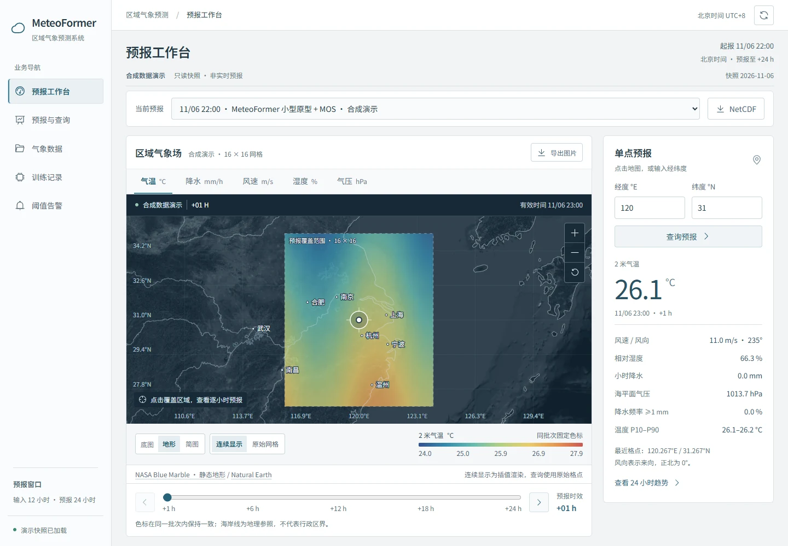

Captured 13 Nov 2026 · Synthetic forecast snapshot
VUE · FASTAPI · PYTORCH
MeteoFormer Weather Workspace
Switch weather fields, inspect 24 forecast hours and query a point. The public page uses a saved synthetic snapshot; training and inference run locally.